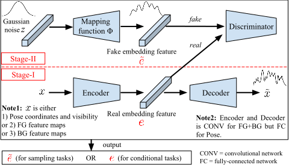
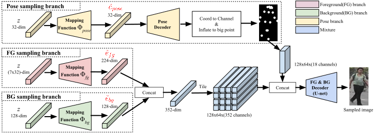
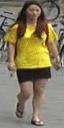
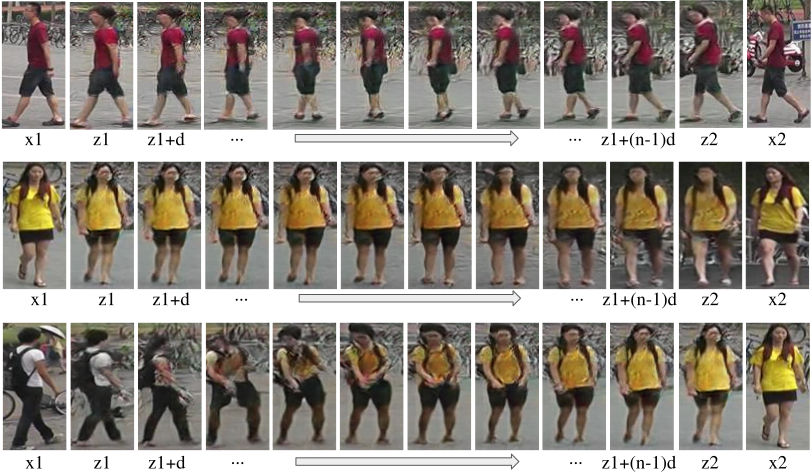
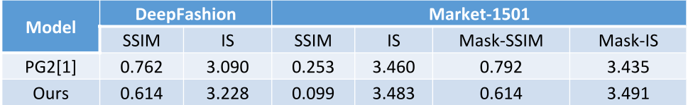
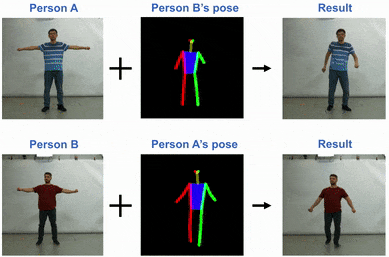
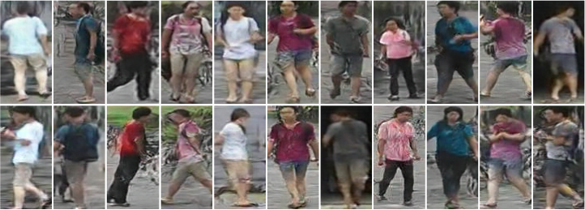
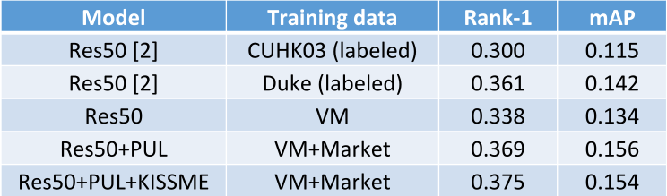

Bibtex @InProceedings{ma2017disentangled,
author = {Ma, Liqian and Sun, Qianru and Georgoulis, Stamatios and Van Gool, Luc and Schiele, Bernt and Fritz, Mario},
title = {Disentangled Person Image Generation},
booktitle = {The IEEE International Conference on Computer Vision and Pattern Recognition (CVPR)},
month = {June},
year = {2018}
}
Framework
Our framework contains two stages as shown below. At stage-I, we use a person’s image as input and disentangle the information into three main factors, namely foreground, background and pose. Each disentangled factor is modeled by embedding features through a reconstruction network. At stage-II, a mapping function is learned to map a Gaussian distribution to a feature embedding distribution.

In details, the stage-I is a disentangled image reconstruction pipeline composed of three branches. Note that we use a fully-connected auto-encoder network to reconstruct the pose (incl. keypoint coordinates and visibility), so that we can decode the embedded pose features to obtain the heatmaps at the sampling phase.
During testing, we can sample embedding features of foreground, background and pose from Gaussian noise, and then combine and decode them person images.

Applications
The proposed framework enables many applications, incl. image manipulation, pose-guided person image generation, image interpolation, image sampling and person re-ID.
Image manipulation
Interpolating inter-frames


Pose guided person image generation

Pose guided person video generation (not use temporal info.)

Unsupervised person re-identification: we generate a virtual re-ID dataset called Virtual Market (VM) as shown below and use it to train a baseline re-ID model Res50 [2].


References:
[1] L. Ma, J. Xu, Q. Sun, B. Schiele, T. Tuytelaars, and L. Van Gool. Pose guided person image generation. In NIPS, 2017.
[2] H. Fan and L. Zheng and Y. Yang. Unsupervised Person Re-identification: Clustering and Fine-tuning. In ArXiv, 2017.